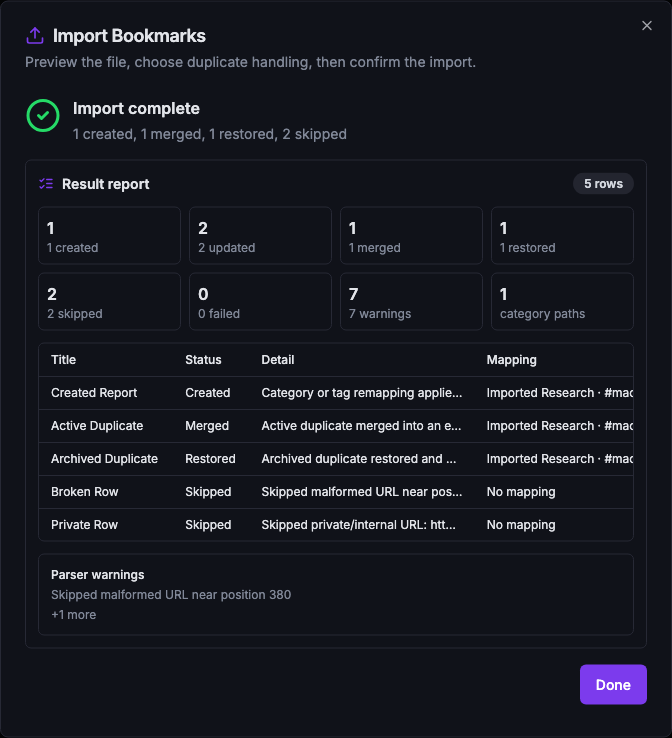
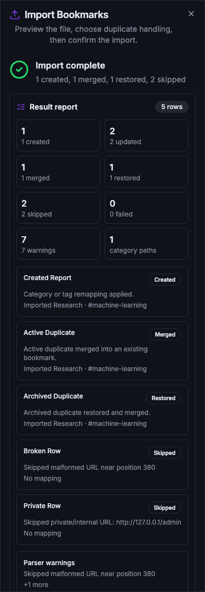

Grimoire Task Report
Import Result Report

Before
Import completion only exposed aggregate progress from the server-sent event stream. Users could see that work finished, but they could not review which rows were created, merged, restored, skipped, failed, or remapped.
Problem
TASK-110 needs a durable enough immediate report after import commit, especially after duplicate policy and category/tag remapping choices change row outcomes.
Changes Added
- Added daemon-side import result data with summary counts, row statuses, warnings, errors, bookmark IDs, and mapping effects.
- Included the final result report in import progress events while keeping progress counters separate from the report payload.
- Recorded created, merged, restored, skipped, and per-row failed outcomes without aborting the whole import on a single row failure.
- Preserved affected bookmark IDs when a row fails after a bookmark has already been created or located.
- Updated the generated API contract, API docs, OpenAPI output, shared types, and e2e mock daemon payloads.
- Rendered a dense completion report in the import dialog, with table rows on desktop and compact row cards on narrow screens.
Result
The import flow now ends with an inspectable result report that shows counts, parser warnings, duplicate-policy outcomes, partial failures, and category/tag mapping effects for individual rows.
Verification
npm run test -- src/components/ImportDialog.test.tsxpassed.bun test src/test/integration/import.test.tspassed indaemon/.npm run docs:apiregenerated contract outputs.npm run docs:api:checkpassed.npm run checkpassed, including lint, type-check, full frontend tests, full daemon tests, API-doc drift check, and production build.npm run test:e2epassed.npm run lintpassed after the e2e selector update, with the existing Fast Refresh warnings only.git diff --checkpassed.- Review hardening added focused regression coverage for post-create row failures and final SSE payload parsing.
- Captured desktop and narrow visual states from an API-mocked Vite dev server on
127.0.0.1:8080.
Additional Screenshots

Implementation Notes
The report is assembled from the same analyzed rows used for preview and commit. Parser warnings remain report-level warnings, while row warnings cover duplicate merges, restore-merge decisions, skipped rows, remapping, and per-row write failures.
The task was moved to done after owner review, review hardening, and full local verification.
Files Changed
daemon/src/routes/import.tsdaemon/src/api/contract.tsdaemon/src/api/types.tsdaemon/src/test/integration/import.test.tssrc/components/ImportDialog.tsxsrc/components/ImportDialog.test.tsxe2e/mock-daemon.tsAPI.mddocs/api-contract.jsondocs/openapi.jsontasks/done/TASK-110-import-result-report.md